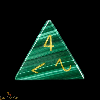
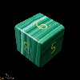
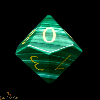
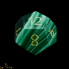
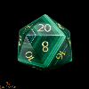

Bevezető
Kedves látogató, az oldalon kedvcsináló gondolatokat, információkat olvashatsz a népszerű hobbi - a Szerepjáték témájában. Jó olvasgatást!
Kedves látogató, az oldalon kedvcsináló gondolatokat, információkat olvashatsz a népszerű hobbi - a Szerepjáték témájában. Jó olvasgatást!
A szerepjátékok előfutárának is felfogható harci játékok egészen az ókorig nyúlnak vissza. A különböző ütközetek vér nélküli modellezése szinte egy idős magával a hadviselés művészetével, de a szerepjátékok szempontjából az első említésre érdemes név G. Wellsé, aki 1915-ben kiadta a Kis háborúk (Little Wars) című könyvét. Ezzel az amatőrök számára is elérhetővé váltak a harci játékok. Az első, kereskedelmi forgalomban is kapható táblás harci játék Charles Roberts nevéhez fűződik, aki ezt 1953-ban jelentette meg. Szintén az ő nevéhez fűződik az Avalon-Hill Game Company megalapítása, ami ma a világ egyik legnagyobb játéktervező és -gyártó cége. A harci játékok népszerűsége a XX. század hatvanas, hetvenes éveiben érte el csúcspontját.
Talán az egyik legfontosabb része a szerepjáték kialakulásának az 1960-as évek végén kezdődött, amikor is Gary Gygax találkozott Jeff Perrennel, Wisconsin Lake Geneva nevű kisvárosának helyi klubjában a The Lake Geneva Tactical Studies Association-ben. Jeff Perren már rendelkezett egy rövidebb szabályrendszerrel középkori harci figurákhoz. Az engedélyével Gary Gygax kibővítette a szabályokat, ami LGTSA Medieval Military Miniatures Rules címen megjelent az International Federation of Wargamers havilapjában. Később a szabályokat továbbfejlesztette és fantasy elemeket is beemelt a játékba. Ez a változat Chainmail címen jelent meg 1971-ben a Guidon Games kiadásában.
Dave Arneson a következő név, akit meg kell említeni. Ő már egy ideje kísérletezett a Chainmail szabályrendszerével és némileg próbálta átalakítani. Levelezés, majd egy Gen Conon történt személyes találkozó után megkezdődött a kisebb csapatoknak szóló játék kialakítása. A szabályok kidolgozása Gary Gygaxre hárult, de Dave Arnesonnak és a témával szintén foglalkozó Dave Megarynek is határozott ötletei voltak. 1970-71 környékén vette kezdetét a Dave Arneson által vezetett Blackmoore várbörötön-kampány, ahol a szokásos európai hadszíntereket felváltotta egy képzeletbeli vár kazamatáinak bejárása. Jellegét tekintve ez nagy előrelépést jelentett a mai szerepjátékok irányába. A Gary Gygax által összeállított első 50 oldalas vázlat 1972 telén került az International Federation of Wargaming körének tagjaihoz tesztelésre, amit Lake Geneva játékosai még tovább teszteltek. A visszajelzések alapján Gary Gygax 150 oldalra bővítette a játékot. Lényegében ez volt az az anyag, ami 1974-ben a Chainmail utódjaként Dungeons & Dragons címen, mint a világ első szerepjátéka megjelent. Kétségtelen, hogy az első szerepjáték megalkotásában mind Gary Gygaxnek, mind Dave Arnesonnak is kimagasló szerep jutott.
Az 1974-es Gen Conon napvilágot látott Dungeons & Dragons, röviden D&D, egy olyan típusú figurás harci társasjátékhoz tartalmazott szabályokat, ahol egy kis méretű csapat járhat be egy terepet különböző, a játékvezető által meghatározott akadályokba, ellenségekbe ütközve, miközben kincseket keresnek. A játék egy három kötetet tartalmazó dobozból állt. Taktikai jellegét jellemzi, hogy bajnokságokat rendeztek, ahol kizárólag a sikeresség, hatékonyság volt mérvadó.
Ezután számos szerző jelentetett meg különböző orgánumokban (a The Dragon magazinban, a Polyhedron magazinban, kiegészítő szabályok Arduin Grimoire-ral kezdődő sorában, nyomtatásban kiadott kalandok formájában) szabálymódosításokat, -pontosításokat és -kiegészítéseket, valamint számos újabb D&D kiadás is napvilágot látott. A szabály szövegeinek decentralizáltsága miatt nem voltak általánosan elfogadott szabályok, mindenki csak olyan szabályok alapján játszott, amit ismert - elképzelhető volt, hogy két D&D-ző csapat egyáltalán nem ismert közös forrást.
1977-ben a TSR kiadásában jelent meg az Advanced Dungeons & Dragons (röviden AD&D) és egy újabb, Dungeons & Dragons címmel rendelkező játék (a változat közismert neve Basic D&D), utóbbi egy sorozat első kiadványa volt, amely a kezdő játékosokat zárkóztatta fel az AD&D-hez. Ezek megjelenésekor már piacon voltak a versenytársak is (például Tunnels & Trolls, RuneQuest, DragonQuest, Traveller, The Fantasy Trip), és ekkorra már fokozatosan kialakultak a maihoz hasonló szerepjátszási szokások is.
A szerepjátékból később több módosult változat jött létre, különösképp az élő szerepjáték (live action role-playing game, LARP), a gyűjtögetős kártyajáték (collectible card game, CCG) vagy a számítógépes szerepjáték (computer role-playing game, CRPG), amelyekkel nem összekeverendő a szerepjáték eredeti formája. Ezeket a játéktípusokat éles határok választják el egymástól mind behatároltságukban, mind szabályaikban, mind egyéb jellemzőikben. Például a számítógépes változat a programozók által megszabott korlátokon belül mozog, de a szerepjáték eredeti változatának csak a fantázia szab határt.
Forrás - Wikipedia - Asztali szerepjátékok
| Kocka (D - Dice) | Kép | Eredményhalmaz |
|---|---|---|
| D4 |  | 1-4 |
| D6 |  | 1-6 |
| D8 | 1-8 | |
| D10 |  | 1-10 |
| D12 |  | 1-12 |
| D20 |  | 1-20 |
Az előzetes teljes szövegű leírása
Egy sármos tolvaj és különc kalandorokból álló bandája nagyszabású akciót terveznek egy elveszett ereklye megszerzéséért, de a dolgok veszélyesen kisiklanak, amikor a rossz emberekkel húznak ujjat…
A Dungeons and Dragons: Betyárbecsület a legendás szerepjáték gazdag világát és játékos szellemét ülteti át a mozivászonra ezzel a fergeteges és akciódús kalandfilmmel.
Bemutató dátuma: 2023. március 30.
Forgalmazó: UIP-Duna Film